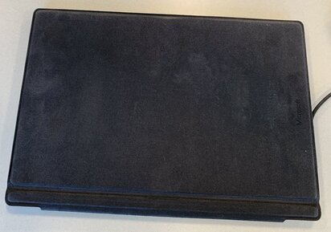
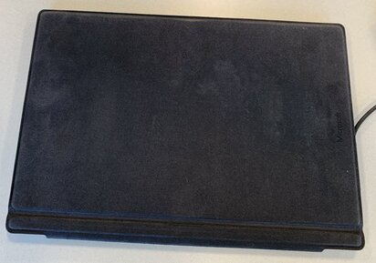

Tablet PCs
Tablet PCs are small portable devices that are becoming more popular every year! They appeal to many as they are super portable which is ideal for college students. Here is the breakdown for what these devices entail!
 

Pros:
- As mentioned earlier, these devices are great on-the-go devices.
- They have high battery life and work with commonly used applications like office and a few developmental applications as well.
- You get a full PC OS experience which makes the learning curve seamless for those accustomed to PCs.
- This is what makes these devices useful for many businesses especially as most are compatible with various kinds of business applications.
Cons:
- While these devices are nice and flexible, they lack power for running high-end applications like movie editing, design, gaming, and other CPU-intensive tasks.
- Some of these apps may appear to run normally initially, but the limited cooling system in these devices risks overheating if used extensively for such tasks.
- They are also quite expensive, making them unaffordable for the average college student.
Rundown:
Tablet PCs are ideal for those who prefer long battery life, portability, and have various tasks to attend to each day. Despite their higher costs, they can accomplish most needs of college students.